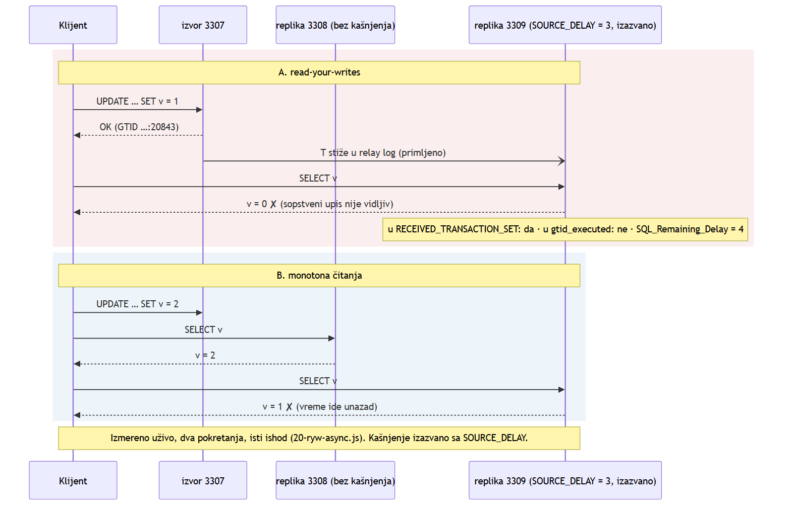
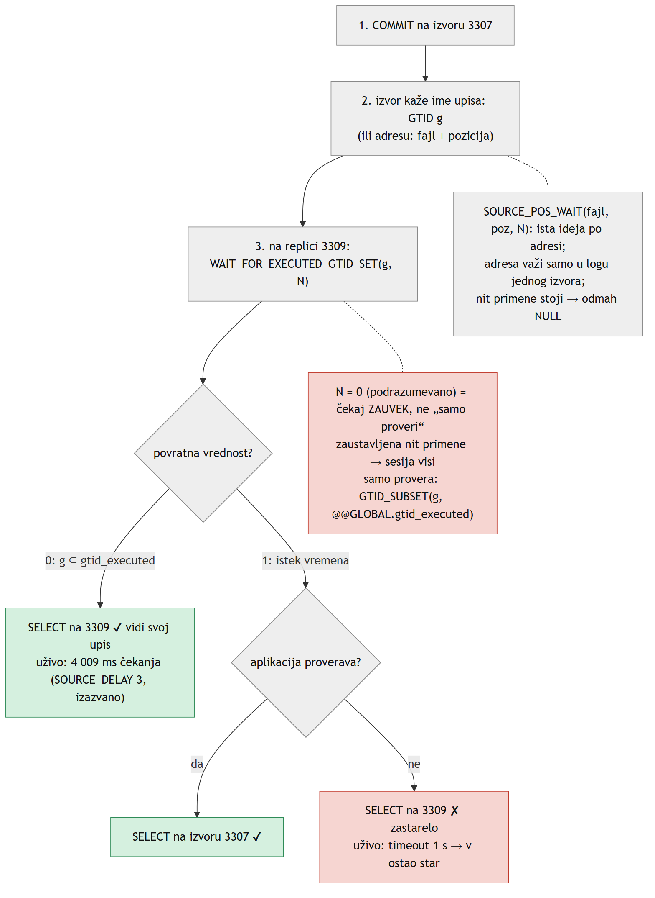
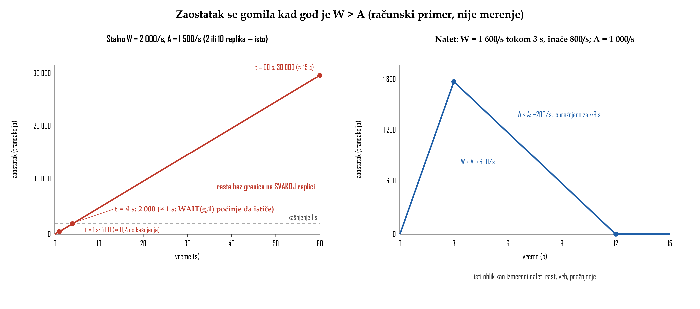

![Gore: vremenska osa sa tri trenutka, t0 COMMIT na izvoru 3307, t1 upis u relay log na 3309 i t2 primena. Između t0 i t1 je faza prijema, između t1 i t2 faza primene sa crvenom napomenom da SELECT još ne vidi T. Plava zagrada preko cele ose kaže kašnjenje jednako t2 minus t0, obe faze se računaju. Dole: dve trake. Izmereni loopback: prijem 0,724 ms i primena 5,651 ms, ukupno 6,375 ms, skoro sve je primena. Ilustrativna spora mreža: prijem 900 ms i primena 100 ms, ukupno 1000 ms, a ko meri samo primenu vidi 100 ms.](../viz/viz-l07-kasnjenje-definicija-1793201271444.png)
Lekcija 07 · Poglavlje 7 (Skaliranje čitanja i kašnjenje replikacije)
Lekcija 02 je pokazala da je „primljeno“ različito od „primenjeno“. Ova lekcija tu razliku
meri: šta je kašnjenje, zašto mu Seconds_Behind_Source ne odgovara, koju anomaliju ono pravi i
kako replika može da sačeka baš tvoj upis.
Seconds_Behind_Source iz njegove
definicije i da kažeš koju od njih performance_schema ne rešava;
(3) da pokažeš read-your-writes i monotona čitanja na asinhronoj replici i da ih zatvoriš sa
WAIT_FOR_EXECUTED_GTID_SET(); (4) da objasniš zašto više replika ne skalira
ni upise ni propusnost niti primene.
„Replika kasni“ ne kaže ništa dok ne kaže koliko je star podatak koji čitam. Na to se može
odgovoriti samo za konkretnu transakciju T:
kašnjenje(T) = t₂ − t₀ t₀ COMMIT na izvoru t₁ T upisana u relay log replike (kraj faze prijema) t₂ T primenjena, SELECT je vidi (kraj faze primene)
Obe faze se uvek računaju, jer klijentu je svejedno gde je njegov upis proveo to vreme. Pitanje koja faza čini veći deo je merenje, a ne definicija. Na loopbacku skoro sve otpada na primenu, a na sporoj mreži može da prevagne prijem.
Preduslov: topologija pokrenuta (topology.ps1 start), asinhrono stanje,
SOURCE_DELAY = 0. Upis ide na 3307, a čitanje na 3309, kao root.
-- on 3307 INSERT INTO poliklinika.heartbeat (ts, node) VALUES (NOW(6), 'node1'); -- on 3309, a second later SELECT LAST_QUEUED_TRANSACTION, LAST_QUEUED_TRANSACTION_ORIGINAL_COMMIT_TIMESTAMP AS t0, LAST_QUEUED_TRANSACTION_END_QUEUE_TIMESTAMP AS t1 FROM performance_schema.replication_connection_status; SELECT WORKER_ID, LAST_APPLIED_TRANSACTION, LAST_APPLIED_TRANSACTION_END_APPLY_TIMESTAMP AS t2, TIMESTAMPDIFF(MICROSECOND, LAST_APPLIED_TRANSACTION_ORIGINAL_COMMIT_TIMESTAMP, LAST_APPLIED_TRANSACTION_END_APPLY_TIMESTAMP) / 1000 AS lag_ms FROM performance_schema.replication_applier_status_by_worker WHERE LAST_APPLIED_TRANSACTION <> '';
Isti GTID u obe tabele; t0 < t1 < t2 sa mikrosekundama; t1 − t0 ispod milisekunde, lag_ms reda nekoliko milisekundi. U uživo pokretanju: 0,724 ms prijem, 6,375 ms ukupno.
Kako se ovo čita: ovo je definicija doslovno, za jednu transakciju koja je imenovana svojim GTID-om, sa obe faze odvojeno.
Seconds_Behind_SourcePrevedeno na naše oznake: sada, po satu replike, minus t₀ po satu izvora, za ono što nit primene trenutno radi, u celim sekundama. Kad nema posla, rezultat je 0. Sve tri slabosti koje priručnik navodi slede iz ove jedne rečenice:
| „događaj koji nit primene obrađuje“ | Slabost 1. Faza prijema se ne vidi. Na sporoj mreži nit primene nema posla, pa prikazuje 0 dok replika kasni. Priručnik: kolona je „useful only for fast networks“. |
| „sat replike − oznaka izvora“ | Slabost 2. Upoređuju se dva sata. Razlika se izračuna kad se pokrene nit prijema, a kasniji pomeraj (NTP) prelazi u rezultat sa istim znakom: +4 s daje +4 s, a −5 s daje 0. |
| „događaj“, u jednini | Slabost 3. Sa više niti primene (podrazumevano 4) nema jednog događaja. Vrednost se zasniva na Exec_Source_Log_Pos, tački bez rupa, koja „may not reflect the position of the most recently committed transaction“. |
![Formula Seconds_Behind_Source je podeljena na tri dela: sada po satu replike, t0 po satu izvora i događaj koji nit primene trenutno obrađuje. Iz svakog dela strelica vodi u crveni okvir: slabost 2 dva sata, slabost 3 više niti primene i Exec_Source_Log_Pos, slabost 1 slepo za fazu prijema. Dole je tabela za performance_schema: slabost 1, slabost 3 i mikrosekunde su rešene, a slabost 2 nije, uz napomenu da preciznost nije tačnost i da je na našoj topologiji sa jednim satom slabost 2 nula po konstrukciji.](../viz/viz-l07-sbs-tri-slabosti-1793201283659.png)
performance_schema rešava slabosti 1 i 3,
ali ne i satove: i ona oduzima oznaku izvora od oznake replike. Izvor: refman 8.4, SHOW REPLICA STATUS.performance_schema daju preciznost. ORIGINAL_COMMIT_TIMESTAMP
ipak piše sat izvora, a END_APPLY_TIMESTAMP sat replike. Ako sat replike žuri 2 s, rezultat je
2,010000 s: šest tačnih decimala pogrešnog broja. Svako merenje koje oduzima oznaku jednog servera od
oznake drugog nasleđuje razliku njihovih satova. To važi i za heartbeat. Kod nas su sve tri instance
na jednoj mašini, sa jednim satom, pa je slabost 2 nula po konstrukciji, a ne zato što je bilo šta
popravilo.
Na 3309 je nit primene ograničena na jednu, a SOURCE_DELAY ne postoji. Četiri sesije na 3307
istovremeno upisuju po 500 redova u visits, svaki red u svojoj transakciji. Na svakih 250 ms jedan
heartbeat red ide na 3307, a uzorkivač beleži oba merenja i Relay_Log_Space na 3309.
![Gornji grafik: stvarno kašnjenje iz performance_schema (plava linija) i Seconds_Behind_Source (crvene stepenice) tokom oko 57 sekundi. Oba su na nuli do oko 4 s, zatim rastu skoro linearno do vrha od oko 31 s na 35,5 s, pa padaju na nulu do 37,9 s. Crvena kriva ide stepenasto i kasni pri padu. Posle pražnjenja crvena kriva više puta skače na 1, dok je plava na nuli. Donji grafik: Relay_Log_Space skoči sa oko 280 na oko 950 KiB do 4,5 s i posle toga se skoro ne menja. Strelica označava da je nit prijema tu završila.](../viz/viz-l07-prirodni-nalet.png)
SOURCE_DELAY. Izvor je komitovao 2 000 transakcija
za 598 ms, a nit prijema ih je primila do 4,5 s. Kašnjenje je ipak raslo do 31,0 s, pa je u celini kašnjenje primene.
Seconds_Behind_Source pri pražnjenju precenjuje za do 4,2 s, a na replici koja je stigla izvor
(stvarno kašnjenje 1–2 ms) pokazuje 1 u 31 od 360 uzoraka. Podaci: figures/raw/07-skaliranje-01-kasnjenje.csv,
examples/04-read-scaling/10-lag-burst.ps1, grafik tools/make-lag-plot.py, MySQL 8.4.11.Šta se čita sa slike:
| relay log stane na 4,5 s | Nit prijema je završila. Ostalih oko 30 s je samo primena. Relay log ne opada dok traje primena, jer ga MySQL briše po celim fajlovima. |
| nagib skoro 1 s/s | Izvor: oko 3 300 transakcija/s (4 sesije, grupno komitovanje). Jedna nit primene: oko 60/s. Zašto baš oko 16 ms po redu visits, nije izmereno. |
| SBS = 1, stvarno 2 ms | Deo razlike objašnjavaju cele sekunde, jer je oznaka događaja u binarnom logu u celim sekundama. Ostatak bi mogla da objasni slabost 3 (checkpoint koordinatora), ali to nije provereno. |
Preduslov: asinhrono stanje, SOURCE_DELAY = 0 na 3309 (skripta to proverava). Skripta sama
vraća replica_parallel_workers i briše redove iz naleta, i kad padne na pola. Traje 1–2 minuta.
cd examples\04-read-scaling .\10-lag-burst.ps1 -Sessions 4 -RowsPerSession 500 cd ..\.. python tools\make-lag-plot.py --with-relay viz\my-burst.png
"burst committed on node1: 2000 transactions in ~600 ms", zatim "OK baseline ~2 ms | peak ~30 s | max |SBS-real| ... | relay settled at t=~4.5 s". Skripta grafika prekida rad ako se krive ne razilaze ili ako relay log raste sve do vrha.
Kako se ovo čita: vrh zavisi od diska. Oblik se ne menja: rani plato relay loga i linearni rast kašnjenja su potpis niti primene kao uskog grla.
Prirodno kašnjenje na loopbacku traje milisekunde, pa anomalija koja se javi samo ponekad ne može da se pokaže. Zato
se na 3309 uključuje SOURCE_DELAY = 3. Priručnik: transakcija „is not executed until at least N seconds
later than its commit on the immediate source“
(refman 8.4, Delayed Replication).
Ovo je izazvano kašnjenje. Opcija inače služi za zaštitu od ljudske greške, a mi je koristimo
da eksperiment bude ponovljiv.

SOURCE_DELAY = 3 na 3309. Read-your-writes je prekršen jer je
upis primljen, ali nije primenjen. Monotona čitanja su prekršena bez ikakvog sopstvenog upisa, samo zato što su dva
čitanja otišla na dve replike koje različito kasne. Dva pokretanja, isti ishod (examples/04-read-scaling/20-ryw-async.js).Obe anomalije su prekršene sesijske garancije iz lekcije 01. Asinhrona
replika daje samo konačnu konzistentnost. U Group Replication isti prozor zatvara
group_replication_consistency = 'BEFORE', izmereno u lekciji 05.
Poglavlje 7 samo upućuje napred na to.
Replika treba da sačeka moj upis, a ne da „stigne izvor“, jer pod stalnim upisima ona izvor možda nikad potpuno ne stigne. Iz lekcije 02 znaš dva načina da se transakcija označi: imenom (GTID) i adresom (fajl + pozicija).

SOURCE_DELAY = 3.
Izmereno: 0 posle 4 009 ms; 1 posle 1 001 ms, uz zastarelo čitanje; SOURCE_POS_WAIT 1 posle 4 312 ms.timeout = 0 | Čekaj neograničeno. To je proizvoljna odluka u dizajnu, a ne „samo proveri“. Provera bez čekanja je GTID_SUBSET(g, @@GLOBAL.gtid_executed). |
| nit primene stoji | Izmereno: GTID funkcija čeka ceo timeout (3 s), pa vrati 1. SOURCE_POS_WAIT odmah vrati NULL. |
| ime ili adresa | Adresa važi samo u binarnom logu jednog izvora i posle failovera ne znači ništa. GTID je isto ime na svakom serveru. |
| ko plaća | Čitalac, oko jedno kašnjenje. Upis na izvoru nije usporen. Isto kao BEFORE u lekciji 05. |
| monotona čitanja | Klijent pamti najveći GTID skup koji je video i čeka ga pre svakog čitanja (izvedeno, nije citat). |
| MySQL Router | access_mode=auto + wait_for_my_writes: čitanja „wait for the last written transaction of the session“, a posle wait_for_my_writes_timeout idu na izvor (Router 8.4). |
Preduslov: asinhrono stanje, kanali uključeni na 3308 i 3309. Skripta postavlja
SOURCE_DELAY = 3 na 3309 i na kraju ga vraća na 0, a radnu tabelu ch7_demo pravi na 3307 i briše.
Traje oko 30 s.
cd examples\04-read-scaling C:\mysql-repl\tools\mysql-shell-8.4.10-windows-x86-64bit\bin\mysqlsh.exe --js --no-wizard --file 20-ryw-async.js
A. ... read node3 at once -> v=0 | received on node3: true | applied on node3: false B. ... reads node2 -> v=2, then node3 -> v=1 C. WAIT_FOR_EXECUTED_GTID_SET(g, 1): returned 1 after ~1000 ms; read node3 -> (stara vrednost) D. WAIT_FOR_EXECUTED_GTID_SET(g, 10): returned 0 after ~4000 ms; read node3 -> v=4 E. SOURCE_POS_WAIT(...): returned 1 (events waited for) after ~4300 ms restored: node3 SOURCE_DELAY = 0
Kako se ovo čita: A i B su anomalije, a D i E njihovo zatvaranje. C je zamka: istek
vremena ne menja ono što SELECT vidi. Čekanje traje oko 4 s za SOURCE_DELAY = 3, što odgovara „at least“
iz priručnika.
Upisi: svaka replika je kopija celog skupa podataka, pa ponavlja svaki upis. Pet replika daje
pet puta više čitanja i isti kapacitet za upis. Propusnost niti primene: neka je W brzina upisa
na izvoru, a A najveća brzina primene na replici. Kad god je W > A, zaostatak raste za
W − A transakcija u sekundi. To je akumulacija, a ne fiksno kašnjenje. Dodata replika ima
istu granicu A, jer i ona mora da primeni svih W. A podižu samo više niti
primene, za nezavisne transakcije, ili brži disk.

W > A kašnjenje raste bez granice na svakoj
replici, pa svaki WAIT ističe i čitanja se vraćaju na izvor. Pri kratkom naletu replika se oporavlja čim
je W < A, isto kao na slici 3.Svako pitanje cilja jednu tačku na kojoj se u lekciji grešilo ili koja je lako mogla da se pomeša.
1. Transakcija je komitovana na izvoru u 0 ms, ušla u relay log u 2 ms, a primenjena je u 1 500 ms. Koliko je kašnjenje?
Kašnjenje je t₂ − t₀. Prijem je deo kašnjenja, ovde je samo mali.
2. NTP pomeri sat replike 3 s unazad, a stvarno kašnjenje je 2 s. Šta pokazuje Seconds_Behind_Source?
Pomeraj sata replike prelazi u rezultat sa istim znakom: 2 − 3 = −1, a to se prikazuje kao 0.
3. Koju slabost Seconds_Behind_Source performance_schema ne rešava?
I performance_schema oduzima sat izvora od sata replike. Mikrosekunde daju preciznost, a ne tačnost.
4. U prirodnom naletu relay log je stao na 4,5 s, a kašnjenje je raslo do 31 s. Šta to znači?
Ceo nalet je primljen za ~0,5 s. Ostalih ~30 s je čisto kašnjenje primene.
5. Korisnik ništa ne upisuje, a čita prvo sa 3308 (novo), pa sa 3309 (staro). Šta je prekršeno?
Bez sopstvenog upisa read-your-writes nema na šta da se primeni. Stanje koje ide unazad krši monotona čitanja.
6. WAIT_FOR_EXECUTED_GTID_SET(g, 2) uz SOURCE_DELAY = 3, pa SELECT bez provere. Šta korisnik vidi?
Funkcija je čekanje sa granicom. Posle 1 upis još nije primenjen, a SELECT o čekanju ne zna ništa.
7. Šta znači timeout = 0 u WAIT_FOR_EXECUTED_GTID_SET?
Proizvoljna odluka iz priručnika: 0 znači „uvek čeka“. Samo provera je GTID_SUBSET.
8. Stalno je W = 2 000/s, a svaka replika može A = 1 500/s. Šta se dešava kad se broj replika poveća sa 2 na 10?
Svaka replika mora da primeni svih 2 000/s. Zaostatak raste za 500/s na svakoj, bez obzira na broj replika.
Rezultat: 0 / 0